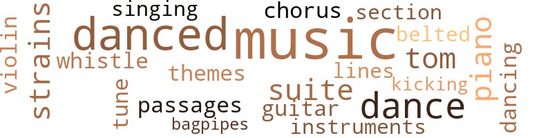
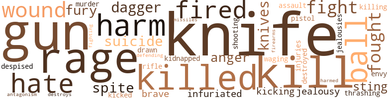
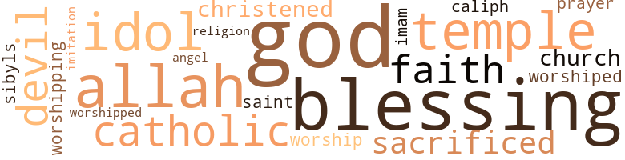

Leopard's Claw, by Ellis, George Washington (1917)
38 music-related terms matched in this text.
Most frequent terms in this topic: music (8); danced (5); dance (3); piano (2); strains (2)
bagpipe.n.01
Definition: a tubular wind instrument; the player blows air into a bag and squeezes it out through the drone
| word | sentence |
|---|---|
| bagpipes | The cool summer breeze wafted the melodiously sweet musical interpretation of " Scots who hae wi ' Wallace bled , Scots wha Bruce has often led , " rendered by Lord Montroy 's Scottish band , picturesquely attired in kilts or plaid petticoats , playing upon the bagpipes in the grand pavilion on the side lawn . |
belt_out.v.01
Definition: sing loudly and forcefully
| word | sentence |
|---|---|
| belted | He carried his coat across his arm , while a rifle was strapped to his shoulders and two revolvers and cartridges belted around his waist . |
chorus.n.01
Definition: any utterance produced simultaneously by a group
| word | sentence |
|---|---|
| chorus | I wonder why he jumped out ? " they all repeated almost in a chorus . |
dance.n.01
Definition: an artistic form of nonverbal communication
| word | sentence |
|---|---|
| dance | After the offerings were over , Eva led a procession of twelve young girls , robed in long white gowns fastened around the waist with golden belts , gold half moon crowns upon their heads and each holding a string of fragrant coffee blossoms which they held in both hands , as Lucretia , now eleven years old , led the dance to the tune of " Ta ra ra bum deah " which Eva had taught them . |
| dance | Around him , in the twilight , were about a score of young maidens wearing only white waist draperies as they whirled in a most phantasmic dance , clapping their hands and singing in loud but plaintive soprano voices . |
| dance | At one part of the dance the charmers kicked their feet into the air and the snakes leaped over them . |
dance.v.03
Definition: skip, leap, or move up and down or sideways
| word | sentence |
|---|---|
| dancing | After a few weird antics and dancing the procession retired . |
| danced | They halted before a small native village and watched the syncopated steps of the half clad young women dancers who whirled and danced to the sounds of the tom-tom , gourd music , hand-clapping and sweet , melodious but weird minor strains . |
| danced | In his hand he held a long torch , which he flourished as he danced and performed other mystic rites . |
| danced | After the Femba whirled and danced the place was cleared for the snake charmers , who swayed and whirled as the serpents kept time with their heads . |
| danced | He leaped upon the landing , took several deep breaths , then danced a weird cake walk . |
| danced | Around the kitchen young men and women dressed in grass petticoats , danced the Gombey , a very wild but graceful cakewalk . |
guitar.n.01
Definition: a stringed instrument usually having six strings; played by strumming or plucking
| word | sentence |
|---|---|
| guitar | Her small music room contained a piano , victrola and the latest records , a violin and guitar , both of which last named instruments Eva was expert in playing . |
kick.v.04
Definition: kick a leg up
| word | sentence |
|---|---|
| kicking | After the religious ceremony they brought out the most fiery and vicious horses , having a knack of kicking and biting , and offered prizes for the successful mounts . |
music.n.01
Definition: an artistic form of auditory communication incorporating instrumental or vocal tones in a structured and continuous manner
| word | sentence |
|---|---|
| music | She has a talent for music which she has also greatly improved . |
| music | I am sure she will continue her studies and wide reading , so that unless she intended to specialize in music or train to earn her living , you may be at rest concerning her education . " |
| music | " Lucretia will grace any drawing room in her present state , but I shall have companions for her next fall who will assist her in the modem languages and music , after which I shall have Lady Endicourt , her mother 's widowed aunt , chaperon her upon a continental tour , " Lord Dubley remarked as he arose to retire . |
| music | They halted before a small native village and watched the syncopated steps of the half clad young women dancers who whirled and danced to the sounds of the tom-tom , gourd music , hand-clapping and sweet , melodious but weird minor strains . |
| music | Her small music room contained a piano , victrola and the latest records , a violin and guitar , both of which last named instruments Eva was expert in playing . |
| music | Do n't worry , mother , we have been keeping up with the styles and latest music , which are after all about all the ladies of your world care about , " Lucretia replied . |
| music | Upon the summit , they entered a dark forest , when the weird music burst forth in confusing and loud minor strains . |
| music | They were paying their respects to their dead chief so as to start him upon the road to the mysterious regions , with a lighted taper and the sound of music . |
musical_instrument.n.01
Definition: any of various devices or contrivances that can be used to produce musical tones or sounds
| word | sentence |
|---|---|
| instruments | Her small music room contained a piano , victrola and the latest records , a violin and guitar , both of which last named instruments Eva was expert in playing . |
passage.n.06
Definition: a short section of a musical composition
| word | sentence |
|---|---|
| passages | Two days afterwards they passed through the Bay of Biscay and only by a change of luck and a capable captain they emerged out of one of the roughest passages the steamer had ever had . |
piano.n.01
Definition: a keyboard instrument that is played by depressing keys that cause hammers to strike tuned strings and produce sounds
| word | sentence |
|---|---|
| piano | Her small music room contained a piano , victrola and the latest records , a violin and guitar , both of which last named instruments Eva was expert in playing . |
| piano | So that Reverend and Mrs. Jones spent many delightful evenings at the bungalow listening to Lucretia accompanying Eva upon the piano , and their favorite opera stars entertaining them from the hornless machine . |
section.n.01
Definition: a self-contained part of a larger composition (written or musical)
| word | sentence |
|---|---|
| section | King Kyndemah was also the caliph of the Mohammedan faith in that section . |
singing.n.01
Definition: the act of singing vocal music
| word | sentence |
|---|---|
| singing | Around him , in the twilight , were about a score of young maidens wearing only white waist draperies as they whirled in a most phantasmic dance , clapping their hands and singing in loud but plaintive soprano voices . |
suite.n.01
Definition: a musical composition of several movements only loosely connected
| word | sentence |
|---|---|
| suite | He engaged a suite for Lord Dubley and himself and took up quarters at the hotel . |
| suite | Up the stairway Eva discovered her private suite and immediately decided upon the change of her boudoir . |
tenor_drum.n.01
Definition: any of various drums with small heads
| word | sentence |
|---|---|
| tom-tom | They halted before a small native village and watched the syncopated steps of the half clad young women dancers who whirled and danced to the sounds of the tom-tom , gourd music , hand-clapping and sweet , melodious but weird minor strains . |
theme.n.03
Definition: (music) melodic subject of a musical composition
| word | sentence |
|---|---|
| themes | She spared no pains to please Lord Winslow and knowing his favorite themes she exerted herself to intelligently discuss them ; sometimes Lord Winslow thought that the discipline of the old Count had broadened her ideas and changed her for the better . |
tune.n.01
Definition: a succession of notes forming a distinctive sequence
| word | sentence |
|---|---|
| tune | After the offerings were over , Eva led a procession of twelve young girls , robed in long white gowns fastened around the waist with golden belts , gold half moon crowns upon their heads and each holding a string of fragrant coffee blossoms which they held in both hands , as Lucretia , now eleven years old , led the dance to the tune of " Ta ra ra bum deah " which Eva had taught them . |
| strains | They halted before a small native village and watched the syncopated steps of the half clad young women dancers who whirled and danced to the sounds of the tom-tom , gourd music , hand-clapping and sweet , melodious but weird minor strains . |
| lines | His hair was in a checkered pattern of four inch small plaits and separated by cleanly shaven inch wide lines , sometimes varying from square divisions , triangles and circles , just as his tonsorial artist had fancied . |
| strains | Upon the summit , they entered a dark forest , when the weird music burst forth in confusing and loud minor strains . |
violin.n.01
Definition: bowed stringed instrument that is the highest member of the violin family; this instrument has four strings and a hollow body and an unfretted fingerboard and is played with a bow
| word | sentence |
|---|---|
| violin | Her small music room contained a piano , victrola and the latest records , a violin and guitar , both of which last named instruments Eva was expert in playing . |
whistle.v.01
Definition: make whistling sounds
| word | sentence |
|---|---|
| whistle | In the branches of the trees , the loud notes of the turacos mingled with the merry whistle of the grey parrots , while the beautiful plumaged birds of variegated colors chirped and hopped about , undisturbed by the recent arrivals . |
124 violence-related terms matched in this text.
Most frequent terms in this topic: knife (17); gun (11); rage (8); kill (8); killed (7)
anger.n.01
Definition: a strong emotion; a feeling that is oriented toward some real or supposed grievance
| word | sentence |
|---|---|
| anger | In his passionate anger at the interrupted scene he informed me that I was not his wife and have no claims upon him . |
| anger | Zodopanda volunteered to go and find the cause when Alpha stepped forward and said : " Oh mighty king , to-day the great lightning god is defending his son , let no one interfere , or venture near until his anger has calmed , for which I will offer prayer before you . " |
contemn.v.01
Definition: look down on with disdain
| word | sentence |
|---|---|
| despised | " I despised him then too much to feel the sting of his cruel revelation , and was too interested in the unfortunate child to think of personal revenge . |
dagger.n.01
Definition: a short knife with a pointed blade used for piercing or stabbing
| word | sentence |
|---|---|
| dagger | During the night as they camped in the woods , Tobey surprised Alpha as he crept toward Oliver with a sharp dagger in his hand . |
| dagger | Alpha drew a sharp dagger and held it in readiness to plunge into Oliver at the slightest movement as he crawled toward him on his knees . |
destroy.v.04
Definition: put (an animal) to death
| word | sentence |
|---|---|
| destroyed | They tied him as the others pillaged and destroyed the camp supplies . |
| destroys | Give to me the white man and I shall keep him until he destroys your enemies . " |
draw.v.23
Definition: pull (a person) apart with four horses tied to his extremities, so as to execute him
| word | sentence |
|---|---|
| drawn | Of course there is no likelihood of America being drawn into this war so that I would hardly compel the two subjects of a great neutral power to accompany me to headquarters . |
engage.v.07
Definition: carry on (wars, battles, or campaigns)
| word | sentence |
|---|---|
| waging | When he reached the regions of the Kong Mountains , where Oliver was so long wandering about , he found that King Dofella was still waging war and ravaging the neighboring towns . |
envy.n.01
Definition: a feeling of grudging admiration and desire to have something that is possessed by another
| word | sentence |
|---|---|
| envy | A heavy-set black giant , of about seven feet , whose brawny muscles well might cause the envy of Jack Johnson , answered the call . |
fight.n.05
Definition: a boxing or wrestling match
| word | sentence |
|---|---|
| fight | His first thought was a fight for freedom , but twisting or turning could not free his hand , and even if the hands were freed , how would it be possible to remove the iron band which bound his leg to the log . |
fight.v.02
Definition: fight against or resist strongly
| word | sentence |
|---|---|
| fight | They had almost to fight their way to the stairway , through the numerous boat boys who tried to assist in taking the luggage and renting their respective craft to tow the party to the landing . |
| fought | Lucretia showed surprising strength as she fought and screamed for help . |
| fight | I would take you with me now , kid , if I had to fight my way through this whole outfit , but you see it would be impossible to take you out in that rig . |
| fought | She would have fought both he and Madame , and , I bet , come out winner . |
| defending | Zodopanda volunteered to go and find the cause when Alpha stepped forward and said : " Oh mighty king , to-day the great lightning god is defending his son , let no one interfere , or venture near until his anger has calmed , for which I will offer prayer before you . " |
| fought | He called to Oliver , but Alpha pushed Oliver out of the way and hastily ascended , fought with Twe and satisfied his own thirst first . |
| fighting | He decided that a stream must be the goal , so informing his terrified companions of his surmise and desperate determination , they cut palm leaves and followed the tracks of the animals over the smouldering grass , fighting the flames which continually caught Alpha 's gown . |
firearm.n.01
Definition: a portable gun
| word | sentence |
|---|---|
| firearms | King Wango nor any of his people had ever before seen a white man nor had they heard of firearms . |
fury.n.01
Definition: a feeling of intense anger
| word | sentence |
|---|---|
| rage | Oliver and Twe escaped to the canoe as Alpha ran around bewildered in the darkness , striking his fists in rage . |
| rage | Oliver was almost wild with grief and rage when he heard Zina 's account of Lucretia 's abduction . |
| rage | He was in a towering rage and ordered his fastest horses when he then discovered that the best horse. , ostriches and canoe were missing . |
| rage | The monkey threw the gown down in a rage and continued his pursuit . |
| rage | " How dare you perform a heathenish rite in this castle ? " she demanded in a rage . |
| fury | Lucretia was really frightened as she had never seen Zina in such a temper , and she read the pent-up fury which had reached its limit of endurance . |
| rage | He seemed to have a strange influence upon the men , who stole away sheepishly as he glowered in speechless rage upon them . |
| rage | But after several of the thorns had stuck into its paws , with a cry of pain and rage , it ambled away . |
| rage | Alpha then left in a rage . |
| fury | When they approached very near , Oliver had at first decided to use his last cartridge , but knowing the fury of the crowd and the large numbers likely to be attracted from the river by the report , he concluded to try a ventriloquist 's trick with which he used to amuse his companions in his school days . |
gun.n.01
Definition: a weapon that discharges a missile at high velocity (especially from a metal tube or barrel)
| word | sentence |
|---|---|
| guns | Built in the twelfth century , the old feudal castle is surrounded by high walls , containing port holes for guns as in feudal times . |
| gun | Varnee , Tobey and Fahn carried light articles for immediate use and a gun strapped upon their shoulders , while a caravan of 40 men carried the camp and mining supplies strapped to their backs in kingjars , palm leaf constructed articles for bearing heavy loads upon the back , and large packages upon their heads . |
| gun | " Me wan some powder and gun all same one you get , " this chief Quirlebah made known to Oliver the dash was insufficient . |
| gun | " Well , you will have to send to Europe and order the gun if you desire a duplicate of this , and my powder is not for dashes but for work I am going to do in the country . |
| gun | " I must hab gun powder for shoot gun to burry de Chief , " he called out to Oliver . |
| gun | " I must hab gun powder for shoot gun to burry de Chief , " he called out to Oliver . |
| gun | Oliver found himself helplessly tricked by Quirlebah and decided to offer a compromise of gun powder so as to leave the unhappy town . |
| gun | As soon as Alpha saw Oliver he thought of the gun which he naturally supposed Oliver would have had , so while the party approached the King , he left and walked down toward the canoes . |
| gun | Twe sprang toward Oliver and grasping his hand for a second , said : " Mr. Oliver , give me the knife and gun and let me tie you quickly before the people come . " |
| gun | You may take the gun since it contains no more cartridges , but from the knife I shall never part , " Oliver stubbornly repeated . |
| gun | Slipping away with the gun Twe hid behind some banana trees near the King 's kitchen and hooted three times like an owl , according to the signal agreed upon . |
| gun | As they were walking single file through the woods , Oliver had just time to raise his gun as he , Twe and the huntsmen scattered in the woods . |
harm.v.01
Definition: cause or do harm to
| word | sentence |
|---|---|
| harm | " Let us go , Zina ; I shall do as you say , but you must promise me upon your oath that you will not harm the Countess or any one else for my sake , " Lucretia replied , as she walked towards the southeast . |
| harm | Eva became nervous and would not have him read for her , but for Lucretia he said as he shook his head and sighed : " It is your fate , oh , little one , whom the elephant would not harm , to finally bring happiness to this poor family , through the leopard 's claw , in the Valley of Allah . " |
| harm | When you are away hunting , I think of the flying snake , the crocodiles and the numerous other things in these jungles that might harm you . |
| harmed | Alpha explained by saying that the gods had sent Oliver to defend his people from the great leopard and that he should not be harmed but carefully guarded and that he should be fed and housed and made his assistant . |
hate.v.01
Definition: dislike intensely; feel antipathy or aversion towards
| word | sentence |
|---|---|
| hate | " We hate to part with the dear child , but since you ask if we think she is sufficiently trained to leave the convent I must be frank and do justice to our charge . |
| hate | " But I hate to think of taking Reggie into the interior with no prospects of a future , " Lucretia remarked aloud in soliloquy . |
| hate | That is why I have been so content to remain here , and I hate to think of going away for fear he may come , " Eva remarked . |
| hate | How I used to hate to conform to the narrow routine of dress and customs ! |
hostility.n.02
Definition: a state of deep-seated ill-will
| word | sentence |
|---|---|
| antagonism | His frowning countenance betrayed his open antagonism to the Arabic priest . |
infuriate.v.01
Definition: make furious
| word | sentence |
|---|---|
| infuriated | They decided that it was unsafe to remain longer in the neighborhood of the infuriated beast , whose growls could be heard in the distance . |
| infuriated | The white gown soon covered the beast 's head , and this infuriated the animal the more as it ran around trying to extricate itself . |
injury.n.01
Definition: any physical damage to the body caused by violence or accident or fracture etc.
| word | sentence |
|---|---|
| harm | What harm is it to use a little ? |
| injuries | I shall be better able to find out if he sustained internal injuries when we get him to bed , " Dr. Roseman stated in answer to the query . |
| harm | Zodopanga stepped forth and accused Alpha in turn and ended , " If you kill my nephew , and the King 's son fails to recover , you and your moon man will drink the sassawood ; if you escape harm my nephew was the witch . " |
jealousy.n.01
Definition: a feeling of jealous envy (especially of a rival)
| word | sentence |
|---|---|
| jealousy | " I do n't want to pry into your confidence , but my woman 's intuition tells me that you are laboring under a great mistake , at the bottom of which is groundless jealousy . |
| jealousies | He looked so sad and altered that she forgot all of her past doubts and jealousies and wanted to take him in her arms and mother him as if he were a little child . |
| jealousy | Jacko stood the slight as long as possible and , his jealousy finally overcoming him , he escaped from Reginald 's arms and jumped upon Eva 's lap , interrupting her reading . |
kick.v.04
Definition: kick a leg up
| word | sentence |
|---|---|
| kicking | After the religious ceremony they brought out the most fiery and vicious horses , having a knack of kicking and biting , and offered prizes for the successful mounts . |
kick_back.v.02
Definition: spring back, as from a forceful thrust
| word | sentence |
|---|---|
| kicked | At one part of the dance the charmers kicked their feet into the air and the snakes leaped over them . |
| kicking | Lucretia recognized her mother and began kicking upon the man 's breast as she screamed and called for her mamma . |
kidnap.v.01
Definition: take away to an undisclosed location against their will and usually in order to extract a ransom
| word | sentence |
|---|---|
| kidnapped | " Yes , Oliver told me of him , but it seems as if he afterward tried to take Oliver 's life and kidnapped Lu-cretia , so I can understand why Oliver doubts him , " Lord Dubley replied . |
kill.v.10
Definition: cause the death of, without intention
| word | sentence |
|---|---|
| kill | King Kype was very much wrought up over the report , and accused Alpha of being a false messenger , who had caused the lightning God to kill one of the Boreform priests . |
| killing | They spent the months of October , November , December , January and February hunting lions , giraffes , elephants , rhinoceroses and hippopotamuses , of which they succeeded in killing large and select specimens after exciting hunting experiences . |
| killed | The hunting party killed a few antelopes and small game on the march and were reminded that the African 's notion of time and distance is very vague and uncertain . |
| killed | " The poor fellow must be killed . |
| kill | Oliver had a little shock and was very much provoked when he saw Fahn about to kill a monkey , which held a baby monkey in her arms in an attitude of suppliance before her , and in spite of which and Oliver 's warning , Fahn killed both monkeys and proceeded calmly in the midst of Oliver 's imprecation to prepare them for a meal . |
| killed | Oliver had a little shock and was very much provoked when he saw Fahn about to kill a monkey , which held a baby monkey in her arms in an attitude of suppliance before her , and in spite of which and Oliver 's warning , Fahn killed both monkeys and proceeded calmly in the midst of Oliver 's imprecation to prepare them for a meal . |
| killed | After missing such a prize , they watched along the way and killed a large red river hog ( potamocholrus porais ) , and halted and camped . |
| kill | " His father the lightning has given him a piece of iron that can kill the leopard and the elephant . |
| kill | " They tie the prisoners and leave them near the river bank for the crocodile man to come and kill . |
| killed | He at once denounced the whole as a scheme of Alpha 's and claimed that Oliver had had assistance and had killed the priest with a knife . |
| kill | Oliver was more amenable to suggestions , since he discovered his blunder , so when Twe returned him his revolver and three cartridges , he listened attentively when he was told to be as calm as possible , and try to kill the wild bull which he was to face with one cartridge , so as to save the other two for some future use . |
| kill | He realized that to attempt to escape would only mean to kill three men and eventually to be recaptured . |
| killed | Eva lost consciousness for a few minutes , but soon recovered , and learned that when the leopard 's tail disappeared within the tent the carriers had all deserted , saying that she was killed , and that they must seek safety . |
| killed | Then the war had come upon the village a few weeks before and killed nearly all of the inhabitants , her mother among them . |
| kill | Zodopanga stepped forth and accused Alpha in turn and ended , " If you kill my nephew , and the King 's son fails to recover , you and your moon man will drink the sassawood ; if you escape harm my nephew was the witch . " |
| kill | " I go kill him while he lif for sleep , master , " Twe whispered , as he drew forth his knife . |
knife.n.02
Definition: a weapon with a handle and blade with a sharp point
| word | sentence |
|---|---|
| knife | Twe managed to reach Oliver 's side , and turning his back to the latter tried to extricate the knife in vain . |
| knife | I lif for let down knife for you , " Oliver heard a whisper from above , and soon caught a glimpse of the bright steel as it descended into the pit . |
| knives | In the right hand they held pronged knives in claw shape . |
| knife | One of the men was leaping toward Eva with the raised leopard knife , when Varnee sent a bullet to his heart . |
| knife | He reread and folded the small letter carefully , and enlarging the cavity of the claw with his pen knife , placed the smallest end of the note in the claw and fitted the other end into the wide gold cap which now fitted firmly . |
| knife | Oliver unconsciously felt for his revolver as Twe told of the Borfimah Society , but he discovered that he was not left with even a pocket knife . |
| knife | Twe pulled a knife out and cut loose the rope on Oliver 's hand , and then handed him the revolver which had been looted from Oliver , as he whispered : " There is only one cartridge , you must wait and be still until he comes near . " |
| knife | Twe then slipped the knife into his hand and disappeared . |
| knife | He gripped his revolver tightly and lay very quietly as a large black man , clean shaven and wearing only a loin cloth , emerged from the canoe , holding a long bowie knife in his right hand . |
| knife | Just as he is about to spring upon him , holding the knife to plunge it into his victim 's breast , Oliver pulled the trigger and the crocodile man threw up his hands and fell backwards near the edge of the embankment . |
| knife | Twe sprang toward Oliver and grasping his hand for a second , said : " Mr. Oliver , give me the knife and gun and let me tie you quickly before the people come . " |
| knife | You may take the gun since it contains no more cartridges , but from the knife I shall never part , " Oliver stubbornly repeated . |
| knife | All might have gone well if Oliver had given up the knife . |
| knife | After the shock was over , even Zodopanda was inclined to believe that it was a miracle , but when the king or - dered Oliver to be unbound and carried to town in triumph , Zodopanda stood watching the carrying out of the orders , when he noticed the knife which Oliver still clasped in his hand . |
| knife | He at once denounced the whole as a scheme of Alpha 's and claimed that Oliver had had assistance and had killed the priest with a knife . |
| knife | After this he cut the ends off with a knife and placed them in an earthen pot over the fire until they hardened and finally polished to a bright glazing appearance . |
| knife | As soon as she reached the tree she opened a large pocket knife and cut away one of the fronds ; as soon as the water flowed she satisfied Lucretia 's thirst and then her own . |
| knives | With only the mats upon which they slept and their knives , which were secured around their waists , they set out upon the journey through the woods . |
| knife | " I go kill him while he lif for sleep , master , " Twe whispered , as he drew forth his knife . |
malice.n.01
Definition: feeling a need to see others suffer
| word | sentence |
|---|---|
| spite | After the surprise of the gold workers was over , Oliver was compelled to smile in spite of his melancholy state , when he thought of the clever trick these craftsmen had played so successfully for years upon credulous villagers . |
| spite | Oliver had a little shock and was very much provoked when he saw Fahn about to kill a monkey , which held a baby monkey in her arms in an attitude of suppliance before her , and in spite of which and Oliver 's warning , Fahn killed both monkeys and proceeded calmly in the midst of Oliver 's imprecation to prepare them for a meal . |
murder.n.01
Definition: unlawful premeditated killing of a human being by a human being
| word | sentence |
|---|---|
| murder | You will cause me to murder that read-haired , snake-eyed woman , " Zina said in a towering passion . |
musket_ball.n.01
Definition: a solid projectile that is shot by a musket
| word | sentence |
|---|---|
| ball | The first open little cloud started when Lucretia was dressing for a ball given in their honor . |
| ball | After a childish guessing game and forfeited kisses , Oliver opened an envelope bearing the executive official seal and they both read together On the evening of the ball Eva certainly fulfilled Oliver 's predictions , when in a simple evening gown of white crepe de chine , she stood before the mirror , clasping a pearl necklace around ' her throat . |
| ball | an invitation to the Governor 's ball , of which they were to be the guests of honor . |
| ball | You will rival the fairies in anything you wear , so come in and let the ball look after its own affairs , dear . " |
| ball | This tactic continued until Oliver got a good aim at the back of his ear , when he fired and sent the ball straight to the brain . |
open_fire.v.01
Definition: start firing a weapon
| word | sentence |
|---|---|
| fired | Just about six o'clock p.m. they passed over into Ashanti and were trying to locate a suitable place for landing , when they were mistaken for a hostile airship and fired upon by the British garrison . |
| fired | Oliver was close upon it before he was aware of its presence , when it plunged into the river just as he fired . |
| fired | This tactic continued until Oliver got a good aim at the back of his ear , when he fired and sent the ball straight to the brain . |
| fired | Oliver stood the imprisonment for several hours , when he fired his last shot at the jailor . |
pistol.n.01
Definition: a firearm that is held and fired with one hand
| word | sentence |
|---|---|
| pistol | They dipped their pestles occasionally into a nearby bucket of water when loud reports as the sound of pistol shots would come forth from the mortar , announcing to the waiting native diners that the favorite African dish " dumboy " was nearly prepared for consumption . |
projectile.n.01
Definition: a weapon that is forcibly thrown or projected at a targets but is not self-propelled
| word | sentence |
|---|---|
| missiles | They beat drums and threw missiles at the beast until it was mad and furious . |
rape.n.03
Definition: the crime of forcing a woman to submit to sexual intercourse against her will
| word | sentence |
|---|---|
| assault | Lucretia related the assault and rescue by the beautiful American . |
rifle.n.01
Definition: a shoulder firearm with a long barrel and a rifled bore
| word | sentence |
|---|---|
| rifle | He carried his coat across his arm , while a rifle was strapped to his shoulders and two revolvers and cartridges belted around his waist . |
shooting.n.02
Definition: killing someone by gunfire
| word | sentence |
|---|---|
| shooting | Traveling through the forest with no adventure other than the shooting of a few wild pigeons , wood chuck , some game and an antelope , which they ate in the afternoon in a temporary camp . |
sting.n.03
Definition: a painful wound caused by the thrust of an insect's stinger into skin
| word | sentence |
|---|---|
| sting | " I despised him then too much to feel the sting of his cruel revelation , and was too interested in the unfortunate child to think of personal revenge . |
| sting | Lord Winslow felt the sting of the words very keenly . |
suicide.n.01
Definition: the act of killing yourself
| word | sentence |
|---|---|
| suicide | Oh , no , suppose they think that I committed suicide . |
| suicide | " You are committing slow suicide already and can not live much longer at this rate . |
thrashing.n.01
Definition: a sound defeat
| word | sentence |
|---|---|
| thrashing | The Comte d'Attone had better not cross my path in the meantime , because I have two big scores against him now and I am sorry that I permitted you to dissuade me from following my impulse that day and had given the scoundrel the good thrashing I was about to give him , " Mr. Wilson repeated during a temporary cessation of the caresses . |
weather.v.01
Definition: face and withstand with courage
| word | sentence |
|---|---|
| brave | But I must be brave and pay the penalty of my rash folly , although it breaks my heart . " |
| brave | The brave man hunters ran away in fright from the dreaded beast . |
wound.n.01
Definition: an injury to living tissue (especially an injury involving a cut or break in the skin)
| word | sentence |
|---|---|
| wound | After she related the circumstances of her father 's escape and wound made by the claw , and his warning as he clasped it upon her neck , Lord Winslow was satisfied that it was merely a sentiment and desire to respect her father 's wishes that prompted her to object to its removal . |
| wound | You had better be careful ; you will start that wound to bleeding afresh . " |
| wound | But how is the wound ? " |
65 religion-related terms matched in this text.
Most frequent terms in this topic: blessing (7); Allah (6); god (5); temple (4); idol (4)
allah.n.01
Definition: Muslim name for the one and only God
| word | sentence |
|---|---|
| Allah | " You lif be close de mission , and dis be Allah valley , " he replied . |
| Allah | " The vale of Allah , " Oliver repeated , " old Mulley 's prophecy has come too true . " |
| Allah | " Dey lif for pray Allah for good luck Mass Jones , " he replied . |
| Allah | He built a corrugated bungalow upon the hill overlooking the Valley of Allah for the family , and assisted Lucretia in beautifying the grounds and comfortable surroundings . |
| Allah | " ' You will unite this unhappy family , through the leopard claw , in the Valley of Allah . ' |
| Allah | Eva became nervous and would not have him read for her , but for Lucretia he said as he shook his head and sighed : " It is your fate , oh , little one , whom the elephant would not harm , to finally bring happiness to this poor family , through the leopard 's claw , in the Valley of Allah . " |
baptize.v.01
Definition: administer baptism to
| word | sentence |
|---|---|
| christened | Aboard the ship they were met by Mr. Solomon , who presented Lucretia with a young monkey which she immediately christened Nogi II in memory of their protectress . |
| christened | " The Wilson Hill , " as Lucretia had christened their new home , contained , besides a large story and a half iron bungalow , newly painted in a modest coat of gray and green shutters , a small white and green frame cottage , with three large and neat square mud houses in their rear . |
blessing.n.05
Definition: the act of praying for divine protection
| word | sentence |
|---|---|
| blessing | Oliver presented his blushing bride , who , after kissing her brother-in-law , stood still as Lord Montroy placed her hand in Oliver 's and gave them both his blessing . |
| blessing | But thanking him , Eva expressed in a very delicate manner her desire to have her husband earn his own income and finally win his father 's respect and blessing . |
| blessing | Lord Montroy accompanied him to Dub-ley castle in an effort to obtain the paternal blessing . |
| blessing | She has suffered much because we left without his blessing . |
| blessings | Lord Winslow led Lucretia to her uncle and received his blessings . |
| blessings | I do n't think that you should leave for the interior without his blessings . " |
| blessing | We were married last evening , and I have come to ask your forgiveness and blessing . " |
| blessing | Oliver turned and started away , but turned , as he reached the door , and made a last appeal to his father for forgiveness and his blessing . |
| blessing | He informed Twe of his intention so that Twe bundled up their small stove and they started upon the hunt , after receiving Alpha 's blessing . |
caliph.n.01
Definition: the civil and religious leader of a Muslim state considered to be a representative of Allah on earth
| word | sentence |
|---|---|
| caliph | King Kyndemah was also the caliph of the Mohammedan faith in that section . |
catholic.n.01
Definition: a member of a Catholic church
| word | sentence |
|---|---|
| Catholic | " I shall place Lucretia with the Catholic sisters and instruct Harold by letter as to her future . |
| Catholic | He lost no time in placing Lucretia and Zina at the Catholic convent in the care of the good sisters . |
| Catholic | A party consisting of Oliver , Eva , and Captain Griffith and a few other passengers , went up by rail to the Catholic establishment on Mount Carmel and lunched . |
church.n.02
Definition: a place for public (especially Christian) worship
| word | sentence |
|---|---|
| church | After searching over the church for you , I gave you up and thought that I had only seen a vision . |
| church | So I finally began to believe that you were really dead , since I had seen your apparition in the church , " Lord Winslow interrupted , as he seized her hands and looked into her face . |
god.n.03
Definition: a man of such superior qualities that he seems like a deity to other people
| word | sentence |
|---|---|
| God | King Kype was very much wrought up over the report , and accused Alpha of being a false messenger , who had caused the lightning God to kill one of the Boreform priests . |
| gods | They came from a far country to our country to steal our wealth , so the gods have decided that we should wed them , and you are chosen to be the first and to wed the fair young maid . " |
| gods | " But she is too young , oh priest of the great gods , " Dofella feebly protested . |
| gods | Do not find excuses , oh fortunate man lest the gods think you unworthy of their choice , " Alpha replied . |
| god | To you the god of lightning has sent his son to save you from your great enemy , the leopard , which destroys your people and keeps you from farming . |
| God | The king listened in doubtful amazement , while Zodopanga pressed his suit and argued that if the prisoner was really the son of the lightning , the God would send a bolt and secure him from the Bofimah ( or Bouform ) priests . |
| God | " Mr. Oliver , thank God I am here before the crocodile man . " |
| god | Zodopanda volunteered to go and find the cause when Alpha stepped forward and said : " Oh mighty king , to-day the great lightning god is defending his son , let no one interfere , or venture near until his anger has calmed , for which I will offer prayer before you . " |
| god | If the lightning god defends his son , we will see if he can defend him from the wild bull , as we all look on . |
| gods | Alpha explained by saying that the gods had sent Oliver to defend his people from the great leopard and that he should not be harmed but carefully guarded and that he should be fed and housed and made his assistant . |
| god | The lightning god sent you to live with us , so you must forget the other wife and take wives from among us . " |
| God | They arrived at a large African town of mud huts , situated at the base of a mountain called the " Yawhey Mountain " or " Mountain of God . " |
| god | Too late , I fear , has the fickle god of fortune given me the key to wealth ? |
idol.n.01
Definition: a material effigy that is worshipped
| word | sentence |
|---|---|
| idol | The King entered the moon temple and bowed before the idol as he lay his offering before its feet . |
| idols | Before Lucretia understood the question had been addressed to her , Lady Dubley ordered Zina and Nogi from the room and forbade their return , then turning to Lucretia she said , " Do n't you know that white people do not wear fetiches and worship idols ? |
| idol | " Do I understand you to say that Lord Dubley 's niece was riding with that African idol ? " |
| idol | Lord Winslow recalled the charges Lady Dubley had made when she referred to the African idol . |
| idol | In the front of the idol a slow fire of sweet smelling twigs burned continually night and day . |
imam.n.01
Definition: (Islam) the man who leads prayers in a mosque; for Shiites an imam is a recognized authority on Islamic theology and law and a spiritual guide
| word | sentence |
|---|---|
| Imam | The Imam , dressed in a scarlet cloak , carried a stool covered with a white cloth , while six attendants held a large white covering over his head , during the time he was reading the service , after which he blessed the head warriors and soldiers . |
imitation.n.01
Definition: the doctrine that representations of nature or human behavior should be accurate imitations
| word | sentence |
|---|---|
| imitation | He gave a very accurate imitation of a leopard 's growl . |
prayer.n.01
Definition: the act of communicating with a deity (especially as a petition or in adoration or contrition or thanksgiving)
| word | sentence |
|---|---|
| prayer | Zodopanda volunteered to go and find the cause when Alpha stepped forward and said : " Oh mighty king , to-day the great lightning god is defending his son , let no one interfere , or venture near until his anger has calmed , for which I will offer prayer before you . " |
religion.n.01
Definition: a strong belief in a supernatural power or powers that control human destiny
| word | sentence |
|---|---|
| faith | " Why did you pretend to love me and even plighted your faith in the holy matrimonial vows , when you knew that my person was so obnoxious to you that you preferred to relinquish your family ties and large inheritance and banish yourself in the interior of Africa among savages ? " |
| faith | King Kyndemah was also the caliph of the Mohammedan faith in that section . |
| faith | The next morning the new chief , a young man of Mohammedan faith , clothed in white robe and dress , sat in the open kitchen and received his guests . |
| religion | Oliver protested again and told him that his religion permitted only one wife . |
sacrifice.v.04
Definition: make a sacrifice of; in religious rituals
| word | sentence |
|---|---|
| sacrificed | He says that he entered a town just as the leopard society sacrificed a white woman . |
| sacrificed | In an effort to lighten the ship before he was aware of the hopelessness of their task to save the ship , much cargo had been sacrificed in this way and at much useless labor . |
saint.n.02
Definition: person of exceptional holiness
| word | sentence |
|---|---|
| Saint | On the afternoon of their last day in Rome , they visited the Saint Maria della Pace , and were seeking their favorite paintings , when she recognized Lord Winslow standing in a very pensive mood looking upon one of Raphael 's paintings with his hands crossed behind his back . |
| angel | Oliver 's good angel guarded him and he never moved when Alpha lifted his hand and secured the box and pearls . |
satan.n.01
Definition: (Judeo-Christian and Islamic religions) chief spirit of evil and adversary of God; tempter of mankind; master of Hell
| word | sentence |
|---|---|
| devil | " Have n't you got the devil bush for preparing young girls for wifehood ? |
| devil | As he presented the gifts to Yanga , he informed her that the Zoa , the head of the devil bush , would call at midnight for his bride . |
| devils | Three Fembas or native devils , attired in grass robes and wearing wooden masks upon their heads , made the time merry for the numerous spectators enjoying the entertainment . |
sibyl.n.02
Definition: (ancient Rome) a woman who was regarded as an oracle or prophet
| word | sentence |
|---|---|
| Sibyls | " I saw you two in Paris before the Hotel de Ville and in Rome at the Ste. Maria Della Pace , and ----- " " I was standing before the four Sibyls of Raphael , when Georgiana came between us and I lost sight of you ? |
temple.n.03
Definition: an edifice devoted to special or exalted purposes
| word | sentence |
|---|---|
| temple | The King entered the moon temple and bowed before the idol as he lay his offering before its feet . |
| temple | Creeping along the barricade , he watched until he saw Lucretia returning from the temple , strolling down near the gateway with Zina . |
| temples | The beard had saved his face from the sun so that he was only slightly tanned about the forehead and neck and with the exception of a few gray hairs at the temples he could easily have passed for thirty-five . |
| temple | In the center stood a circular mosque shaped temple covered with thatch . |
| temple | At the back of the temple several small huts were reserved for the priests and virgins , who kept the fire burning . |
worship.n.01
Definition: the activity of worshipping
| word | sentence |
|---|---|
| worship | Before Lucretia understood the question had been addressed to her , Lady Dubley ordered Zina and Nogi from the room and forbade their return , then turning to Lucretia she said , " Do n't you know that white people do not wear fetiches and worship idols ? |
worship.v.02
Definition: show devotion to (a deity)
| word | sentence |
|---|---|
| worshipping | Oliver was given a royal welcome in the home of the mysterious spirits , who planned to demand more food from the worshipping villagers . |
| worshiped | The interpreters could only obtain from the villagers that he had come with a caravan a few weeks previously , and was considered and worshiped as a kind of fetich because of his infirmity . |
| worshipped | The King and people decided that Eva and Lucretia had been sent by the " Moon God " whom they worshipped . |